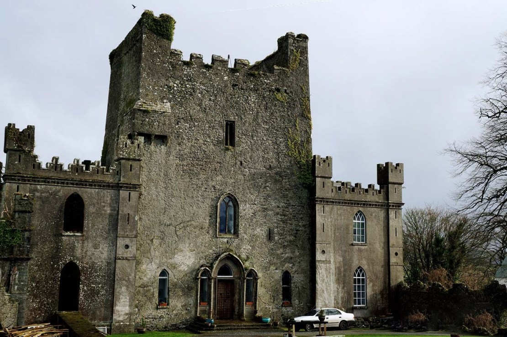

| |
Haunted Places | Paranormal Activities | Exorcisms & Possessions | Social Platforms | Horror MoviesCommon Signs | Contact Us |
|---|
The Leap CastleRoscrea, County Offaly, Ireland |
The story behind the most haunted castle in Ireland, Leap Castle, is very disturbing.

The Story Behind The Name
Leap Castle was originally named ‘Leim Ui Bhanain’, which translates to ‘Leap of the O’Bannons’. According to legend, two of the O’Bannon brothers were contesting two of the leaders of their clan.
It was decided that the only way to settle the disagreement was by a show of bravery. Both brothers were to jump off of the rocky outcrop where Leap Castle was set to be constructed.
The man that survived the jump (this sounds mental, I know!) would win the right to be chieftain of the clan.
History Of The Leap Castle
There are several bloody tales attached to Leap Castle. I’ve singled out three below, as they’re particularly gruesome, and tend to back up Leaps claim as the most haunted castle in Ireland.
The first is the story of the ‘Red Lady’, a spirit that’s said to restlessly haunt the castle while holding the dagger that she used to take her own life with.
The second is a feature in the castle known as an oubliette. This is a hidden chamber where hundreds of people were thrown and left to die.
The third is the story of the Bloody Chapel. It’s here that one of the O’Carroll’s murdered his brother while he gave mass. His ghost has been seen lurking in the shadows on many occasions.
The Red Lady
The story from Leap Castle that made my stomach turn was that of the ‘Red Lady’. According to legend, she was captured by a member of the O’Carroll clan and held prisoner.
It’s said that she was assaulted by a number of the O’Carroll’s and gave birth to one of their children. This displeased the O’Carroll’s who said that they couldn’t afford to feed another mouth.
It’s believed that one of the clan murdered the child with a dagger. The mother was, understandably, distraught and is said to have grabbed the dagger and used it to end her own life.
The Red Lady has been seen by a number of people over the years. She has been described as a tall woman dressed in red. It’s said that she moves through Leap Castle carrying the dagger that was used to take her child from her.
The Oubliette
The oubliette is a small chamber located in one of the corners of the Bloody Chapel. Its original purpose was to store valuables, but it could also be used as a hiding place during the event of a siege.
However, this oubliette had a more sinister use. The O’Carrolls modified the chamber and made it into a small dungeon where they would throw prisoners. Here’s where it gets worse…
The name ‘Oubliette’ comes from the French ‘to forget’. Once the O’Carroll’s threw someone in the chamber, they were simply forgotten about.
The chamber wasn’t discovered until the early 1900s when a renovation took place. Those tending to the castle discovered a hidden chamber that was said to be filled with hundreds of skeletons.
The Bloody Chapel
The Bloody Chapel is reported to be home to many of the wandering spirits of Leap Castle. Apparently, many people that pass the castle after dark have seen a bright light pouring out of the upper windows.
One of the stories from the Bloody Chapel tells of the bloody murder of the O’Carroll priest by one of his brothers, during a struggle for power.
It’s said that the priest began mass before the brother arrived, which was seen as a sign of great disrespect. The brother murdered the priest right there in the chapel.
According to reports, the ghost of the priest has been seen lurking in the stairway near the chapel.
Beyond The Veil |
||
|---|---|---|
|
Explore the unexplained and discover mysteries that challenge the ordinary. |
||
|
||
|
|